模拟电子技术复习串讲：公式讲义版
根据
ppt/复习串讲.pdf 整理。每节保留复习串讲中的核心公式，补充使用场景和对应 PPT 插图。复习主线
1. PN 结与二极管
2. BJT/FET 与三种组态
3. 小信号模型与参数表
4. 放大电路改进与多级放大
5. 差分放大电路
6. 负反馈放大电路
7. 集成运放基础电路
8. 功率放大电路
9. 振荡与比较器
10. 直流稳压电源
1. PN 结与二极管：先判断导通，再写模型
核心：单向导电性
二极管题通常先判断导通/截止，再选择理想模型、恒压降模型或折线模型。硅管常取导通压降约 \(0.7\,\mathrm{V}\)，锗管常取约 \(0.2\,\mathrm{V}\)。串并联二极管电路中，先找最容易正向导通的支路。
\[ i_D\approx 0\quad (v_D\lt V_{\mathrm{on}}) \]
\[ v_D\approx V_{\mathrm{on}}\quad (\text{恒压降模型}) \]
\[ i_D\approx \frac{v_D-V_{\mathrm{on}}}{r_D}\quad (\text{折线模型}) \]
做题顺序：假设状态 - 写回路方程 - 检查假设是否自洽。
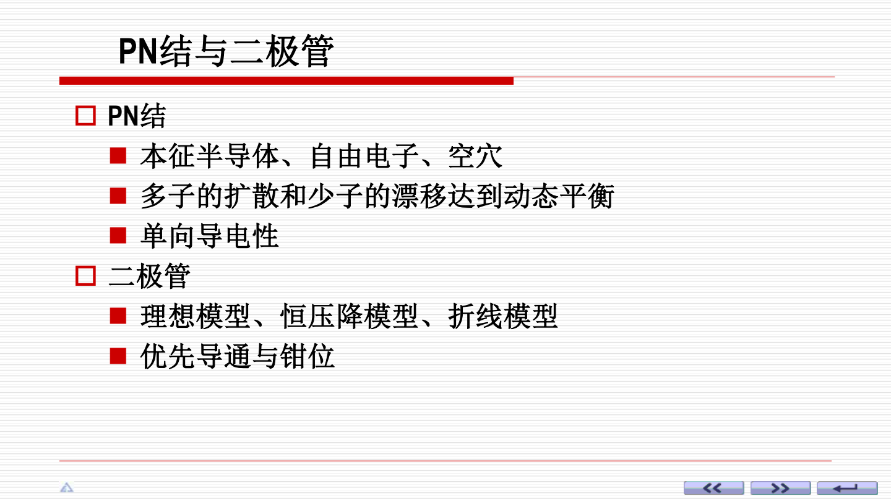
2. BJT/FET 与三种基本组态
先认公共端，再看输入输出
BJT 常见三种组态是共射、共集、共基；FET 对应共源、共漏、共栅。复习串讲强调：判断组态时看信号输入和输出端，公共端决定组态名称。
\[ I_C\simeq \beta I_B,\qquad I_E=I_B+I_C \]
\[ r_{be}\approx 200\Omega +(1+\beta)\frac{26\,\mathrm{mV}}{I_{EQ}(\mathrm{mA})} \]
\[ i_d=g_m v_{gs}\quad (\text{FET 小信号跨导模型}) \]
共射/共源常用于电压放大；共集/共漏常作缓冲；共基/共栅输入电阻小、频率性能好。
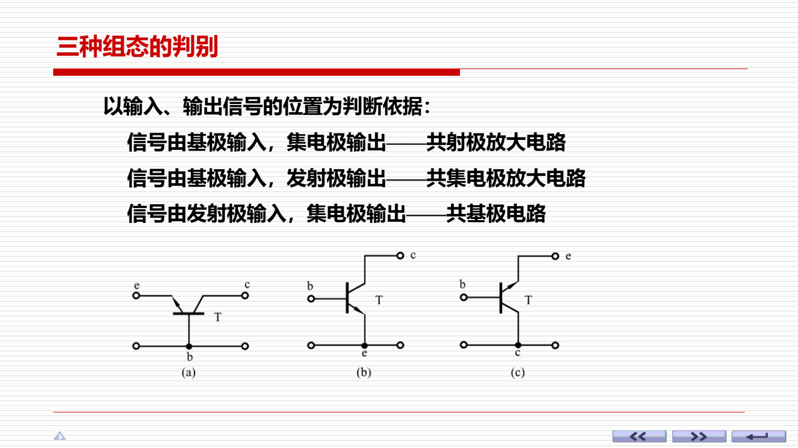
3. 放大电路分析方法：Q 点与交流通路分开
直流定 Q 点，交流算指标
复习串讲把放大电路分析分成图解法和小信号模型两条路。考试计算题更常用小信号模型：直流电源对交流视为短路，耦合/旁路电容在中频视为短路。
\[ I_{BQ}=\frac{V_{BB}-V_{BEQ}}{R_b},\qquad I_{CQ}\simeq \beta I_{BQ} \]
\[ V_{CEQ}=V_{CC}-I_{CQ}R_C \]
\[ A_v=\frac{v_o}{v_i},\qquad R_i=\frac{v_i}{i_i},\qquad R_o=\frac{v_o}{i_o} \]
不能用交流小信号模型求静态工作点；静态工作点必须由直流通路确定。
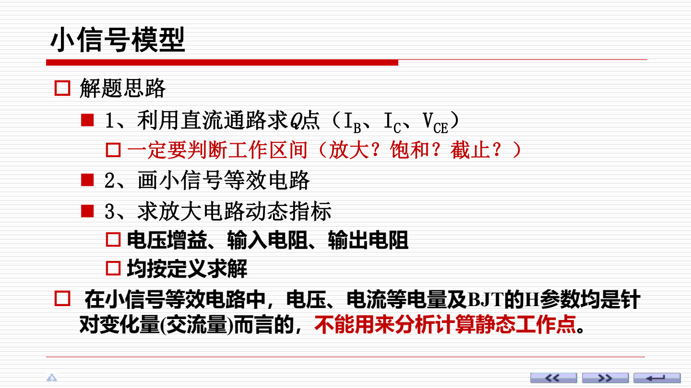
4. 三种 BJT 组态公式速记
把符号和量级记牢
三种组态的差别主要体现在电压增益符号、输入电阻和输出电阻。共射反相并有电压放大，共集电压增益接近 1 但输入电阻大，共基同相且输入电阻小。
| 组态 | 电压增益 | 输入电阻 | 输出电阻 |
|---|---|---|---|
| 共射 CE | \( -\dfrac{\beta(R_C\,/ /\,R_L)}{r_{be}} \) | \( R_b\,/ /\,r_{be} \) | \( R_C \) |
| 共集 CC | \( \dfrac{(1+\beta)R_L'}{r_{be}+(1+\beta)R_L'}\approx 1 \) | \( R_b\,/ /\,[r_{be}+(1+\beta)R_L'] \) | \( R_E\,/ /\,\dfrac{R_s+r_{be}}{1+\beta} \) |
| 共基 CB | \( \dfrac{\beta(R_C\,/ /\,R_L)}{r_{be}} \) | \( R_E\,/ /\,\dfrac{r_{be}}{1+\beta} \) | \( R_C \) |
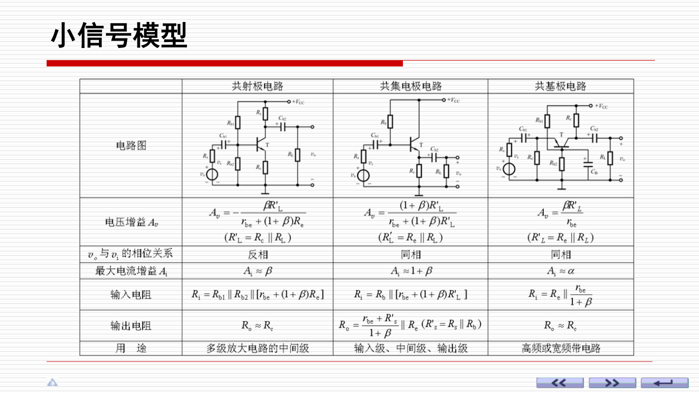
5. BJT 与 FET 组态对应关系
BJT 看电流，FET 看跨导
FET 是电压控制电流器件，小信号模型常用受控电流源 \(g_m v_{gs}\)。与 BJT 类比时，共源对应共射，共漏对应共集，共栅对应共基。
\[ A_v(\text{CS})\approx -g_m(R_D\,/ /\,R_L) \]
\[ A_v(\text{CD})\approx \frac{g_mR_L'}{1+g_mR_L'}\approx 1 \]
\[ R_i(\text{FET})\ \text{通常很大} \]
FET 输入端栅极电流近似为零，所以输入电阻常远大于 BJT。
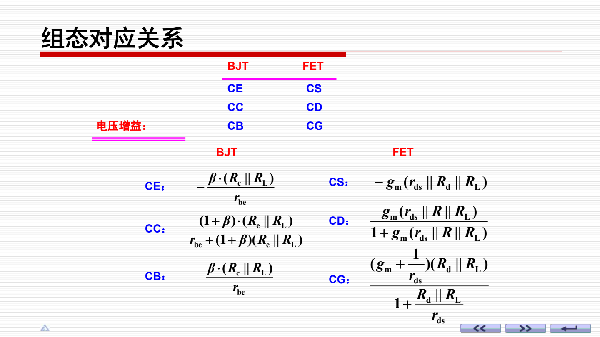
6. 改进放大电路：稳 Q 点、减失真、提高带载能力
改进目标不同，电路手段不同
射极偏置电路通过直流负反馈稳定 Q 点；多级放大提高总电压增益；复合管提高等效电流放大系数和带负载能力。分析多级电路时，前一级输出电阻和后一级输入电阻会互相影响。
\[ A_v=A_{v1}A_{v2}\cdots A_{vn} \]
\[ R_i=R_{i1},\qquad R_o=R_{on} \]
\[ \beta_{\mathrm{eq}}\simeq \beta_1\beta_2 \]
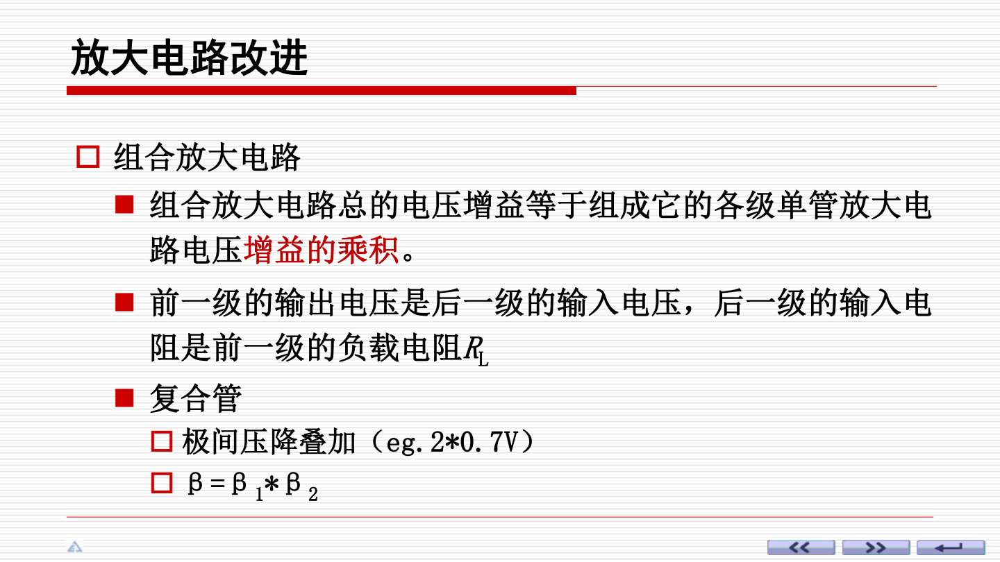
7. 差分放大电路：放大差模，抑制共模
核心指标：差模增益与共模抑制
差分电路用对称结构放大两个输入端的差值，同时尽量抑制两端共同变化的信号。它是集成运放输入级的基础。计算时要分清差模输入、共模输入、单端输出和双端输出。
\[ v_{id}=v_{i1}-v_{i2},\qquad v_{ic}=\frac{v_{i1}+v_{i2}}{2} \]
\[ A_d=\frac{v_{od}}{v_{id}},\qquad A_c=\frac{v_{oc}}{v_{ic}} \]
\[ \mathrm{KCMR}=\left|\frac{A_d}{A_c}\right|,\qquad \mathrm{KCMR_{dB}}=20\lg\left|\frac{A_d}{A_c}\right| \]
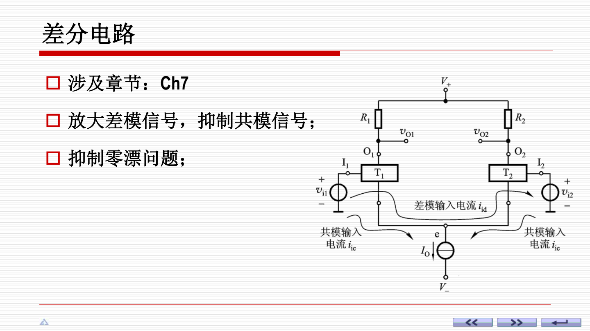
8. 差分例题：按 Q 点、差模增益、输出电压走
考试题常把静态和动态混在一起
差分题先算静态电流和各管集电极电压，再用小信号模型求差模增益。若给出输入差值 \(v_{id}\)，最后由输出方式判断 \(v_o=A_dv_{id}\) 还是单端输出的一半关系。
\[ I_{C1}\approx I_{C2}\approx \frac{I_E}{2} \]
\[ r_{be}\approx 200\Omega +(1+\beta)\frac{26\,\mathrm{mV}}{I_E/2} \]
\[ A_{d}\approx \frac{\beta(R_C\,/ /\,R_L)}{2r_{be}} \quad (\text{单端输出常见形式}) \]
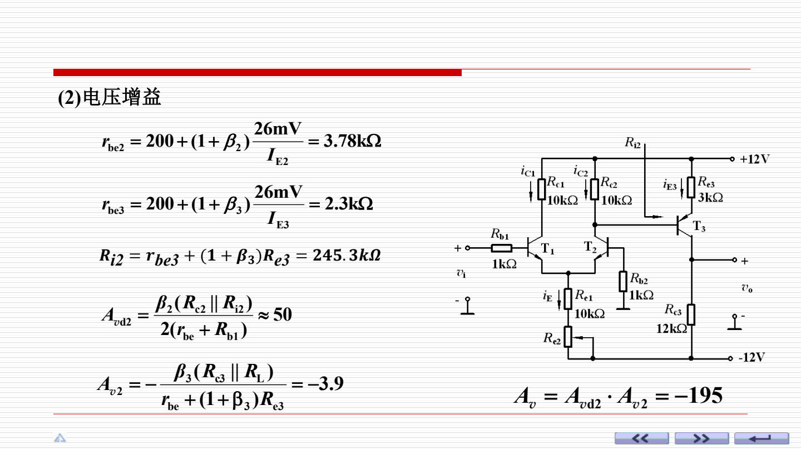
9. 负反馈：判类型，再用深度反馈估算
四步：找反馈、判极性、判采样、判混合
负反馈会牺牲一部分增益，换来更稳定的放大倍数、更小的非线性失真、更好的噪声抑制和更可控的输入/输出电阻。复习串讲强调瞬时极性法、串并联判别和负载短路法。
\[ A_f=\frac{A}{1+AF} \]
\[ 1+AF\gg 1\quad \Rightarrow\quad A_f\approx \frac{1}{F} \]
\[ \text{闭环增益稳定性提高约 }(1+AF)\text{ 倍} \]
串联反馈增大输入电阻，并联反馈减小输入电阻；电压反馈减小输出电阻，电流反馈增大输出电阻。
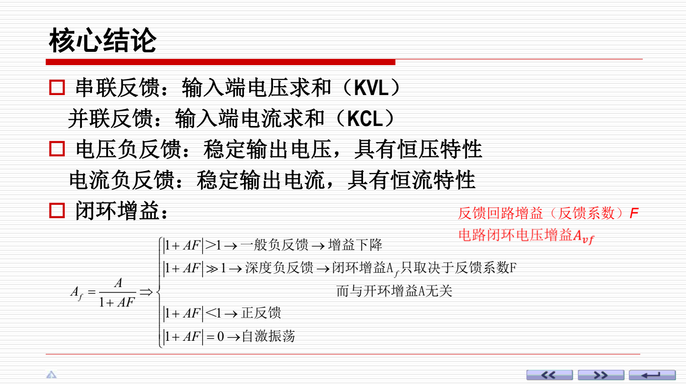
10. 反馈判别例题：沿反馈通路看信号
不要只看元件位置，要看信号回路
判断反馈时，可以从输出端沿反馈网络回到输入端。若反馈信号削弱净输入信号，就是负反馈；若增强净输入信号，就是正反馈。采样输出电压还是输出电流，决定是电压反馈还是电流反馈。
\[ v_i=v_s-v_f\quad (\text{串联负反馈的典型关系}) \]
\[ i_i=i_s-i_f\quad (\text{并联负反馈的典型关系}) \]
\[ A_f\approx \frac{1}{F}\quad (\text{深度负反馈}) \]
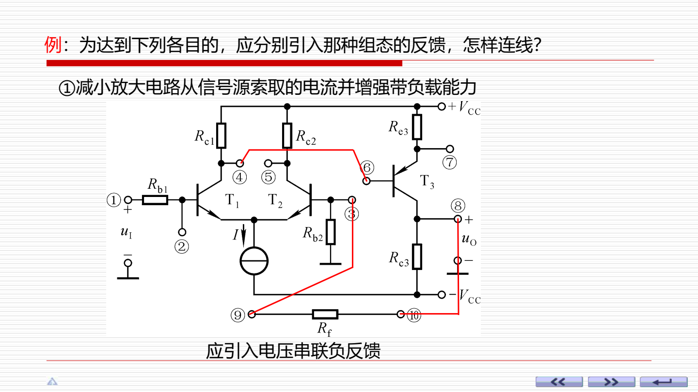
11. 理想运放：虚短、虚断是解题钥匙
在线性区才能用虚短
负反馈下的理想运放通常工作在线性区，此时 \(v_P\approx v_N\)，输入电流近似为零。开环或正反馈电路常进入非线性区，不能随便使用虚短。
\[ v_i=v_P-v_N,\qquad v_o=A_o(v_P-v_N) \]
\[ v_P\approx v_N\quad (\text{虚短}) \]
\[ i_P\approx i_N\approx 0\quad (\text{虚断}) \]
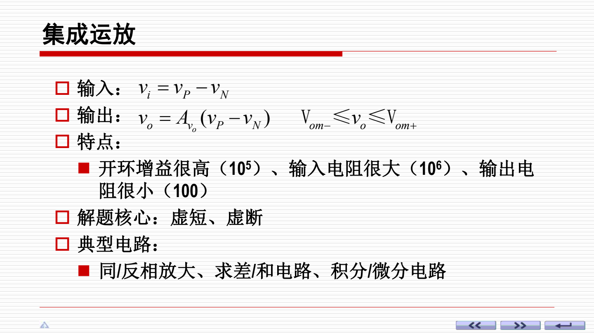
12. 同相、反相、差分、求和运放电路
把输入节点电流方程写清楚
反相电路在反相端列 KCL；同相电路看反馈分压；求和电路本质是多个输入电流在反相节点相加；差分电路要求电阻配比满足条件，才能只放大差值。
\[ A_v(\text{同相})=1+\frac{R_f}{R_1} \]
\[ A_v(\text{反相})=-\frac{R_f}{R_1} \]
\[ v_o=-R_f\left(\frac{v_{i1}}{R_1}+\frac{v_{i2}}{R_2}+\cdots\right) \]
\[ \frac{R_4}{R_1}=\frac{R_3}{R_2}\quad \Rightarrow\quad v_o=\frac{R_4}{R_1}(v_{i2}-v_{i1}) \]
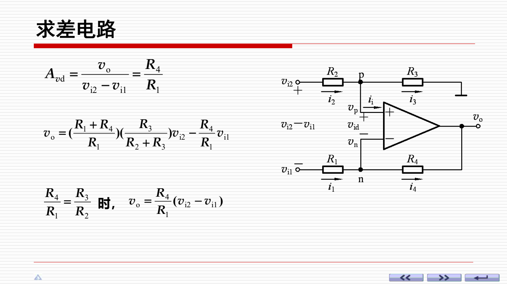
13. 积分与微分电路：电容决定运算关系
积分看面积，微分看变化率
积分电路把输入电压对时间积分，方波输入会得到斜坡波；微分电路输出与输入变化率成正比，阶跃输入会产生尖脉冲。实际电路常加入限幅或补偿来避免漂移和噪声放大。
\[ v_o=-\frac{1}{RC}\int v_i\,dt \]
\[ v_o=-RC\frac{dv_i}{dt} \]
\[ v_i=V_I\quad \Rightarrow\quad v_o=-\frac{V_I}{RC}t \]
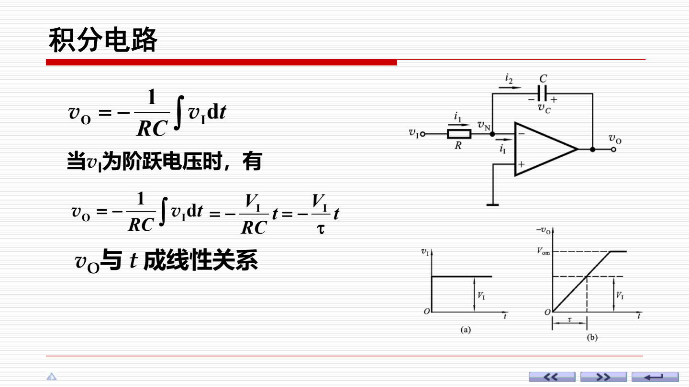
14. 功率放大：关注输出功率、效率和管耗
乙类互补输出最常考
功率放大电路追求把足够大的功率送到负载。乙类互补功放两只管各导通半周，理想最大效率约为 \(78.5\%\)。实际电路常引入甲乙类偏置来减小交越失真。
\[ P_o=\frac{V_{om}^2}{2R_L} \]
\[ P_V=\frac{2V_{CC}V_{om}}{\pi R_L} \]
\[ \eta=\frac{P_o}{P_V} \]
\[ \eta_{\max}=\frac{\pi}{4}\approx 78.5\% \]
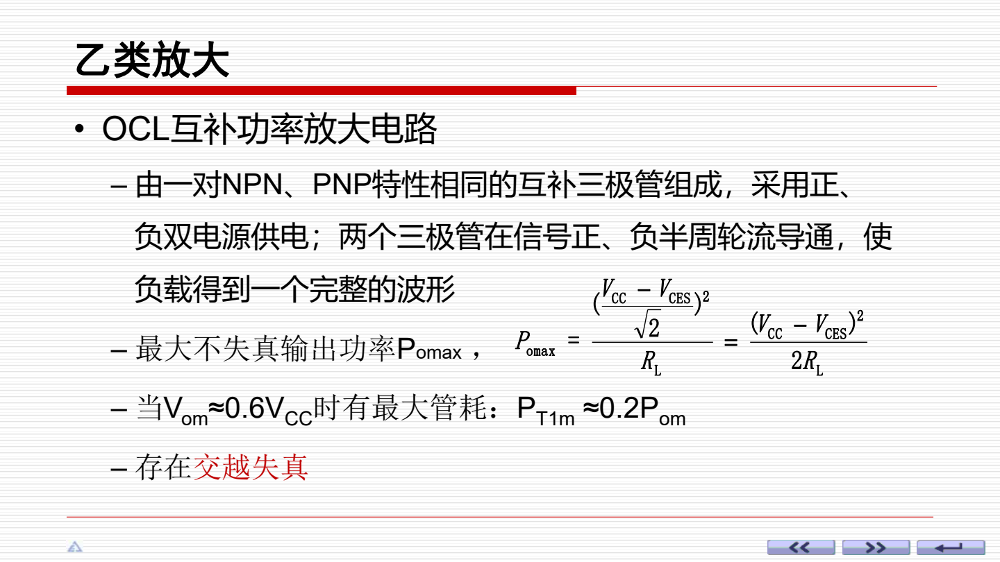
15. 正弦波振荡：相位条件 + 幅值条件
本质：带正反馈的放大器
振荡电路由放大器、反馈网络、选频网络和稳幅环节组成。起振时环路增益略大于 1，稳定后幅值条件趋近于 1。RC 振荡常用于低频正弦波。
\[ \varphi_A(\omega)+\varphi_F(\omega)=2n\pi \]
\[ A(\omega)F(\omega)=1 \]
\[ f_0=\frac{1}{2\pi RC}\quad (\text{RC 桥式振荡常用式}) \]
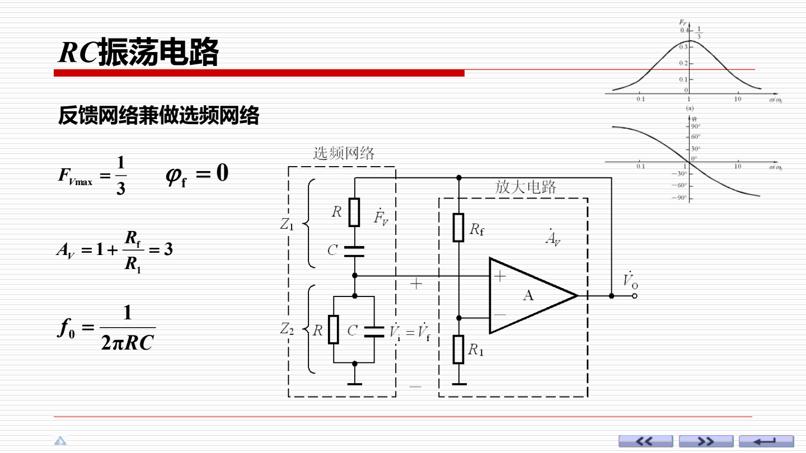
16. 比较器与方波/锯齿波发生器
比较器工作在非线性区
比较器输出只有高、低两个饱和值，不能按线性运放的虚短来算。迟滞比较器引入正反馈，形成两个阈值，能提高抗干扰能力。方波和锯齿波发生器常由迟滞比较器加积分电路构成。
\[ v_o=+V_{OM}\quad (v_P\gt v_N) \]
\[ v_o=-V_{OM}\quad (v_P\lt v_N) \]
\[ T=4R_1C\frac{R_2}{R_3},\qquad f=\frac{1}{T}=\frac{R_3}{4R_1R_2C} \]
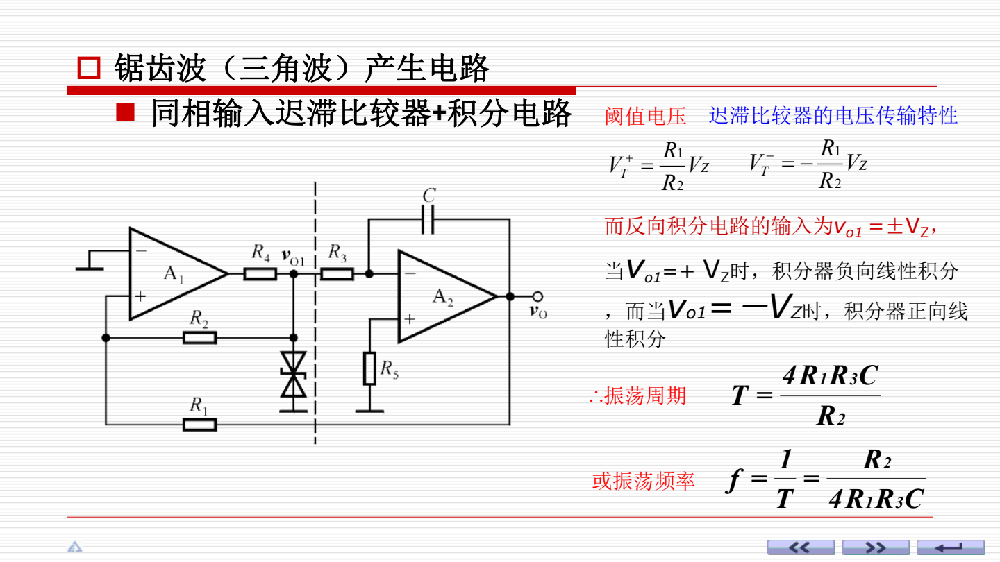
17. 直流稳压电源：整流、滤波、稳压
把交流变成稳定直流
直流稳压电源通常包括变压、整流、滤波和稳压。整流把交流变成脉动直流，滤波减小纹波，稳压环节进一步稳定输出。串联反馈式稳压电路可用反馈网络设定输出电压。
\[ V_L\approx (1.1\sim 1.2)V_2\quad (\text{单相桥式整流电容滤波常用估算}) \]
\[ V_o=V_{\mathrm{REF}}\left(1+\frac{R_1}{R_2}\right) \]
\[ r_d\ge (3\sim 5)\frac{T}{2} \quad \text{时滤波效果较好} \]
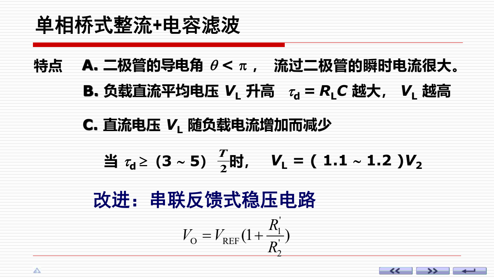
源文件：ppt/复习串讲.pdf；插图为对应 PPT 页面渲染。生成文件：output/pdf/review_formula_notes_with_figures.pdf